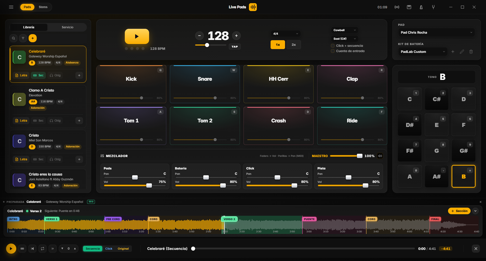
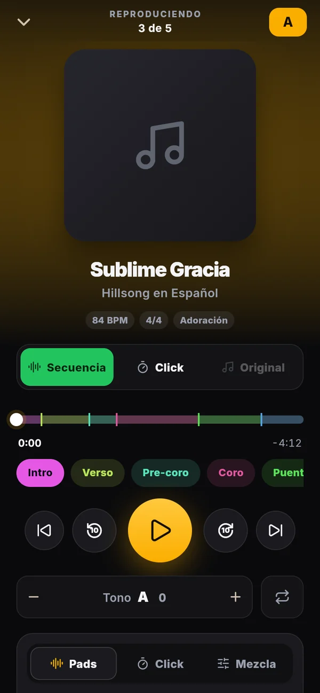
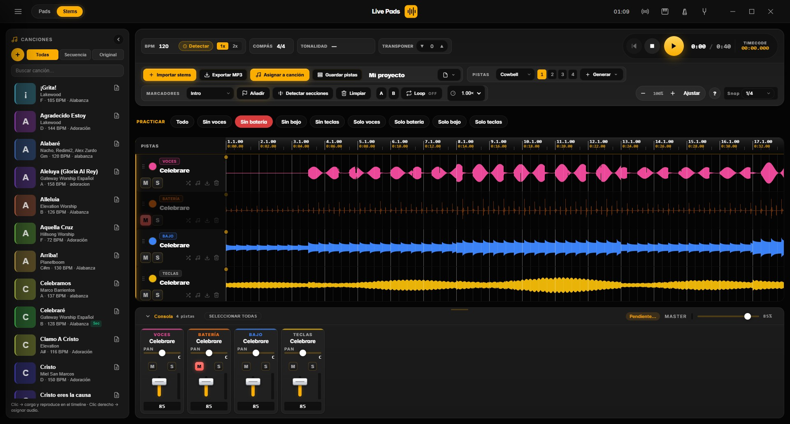
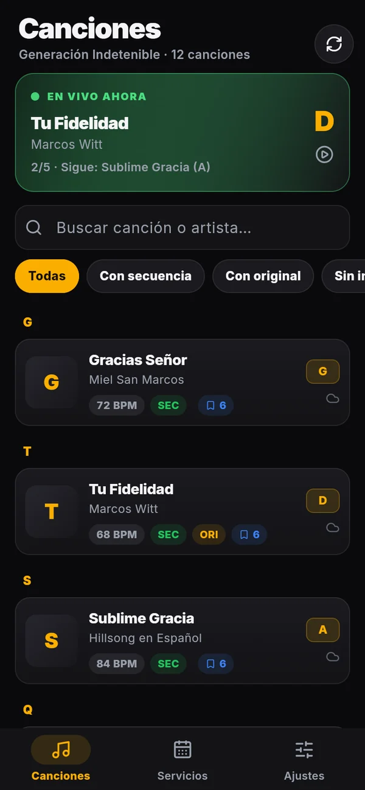
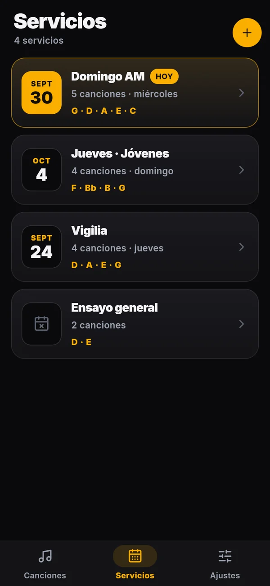

Pads continuos, click exacto, secuencias con secciones, un editor de stems con IA y una app móvil donde toda la banda ve el repertorio y los servicios. Sin latencia, sin silencios entre canciones.
¿Quieres verla primero? Prueba la demo en tu navegador — sin instalar nada.


La cabina completa: pads, click, secuencias, stems con IA, MIDI y letras. Se actualiza sola.
InstaladorApp nativa: repertorio, servicios, reproductor con pads y click, y todo disponible sin internet.
Descargar APKSin instalar: abre la versión web, añádela a la pantalla de inicio y úsala como una app.
Abrir versión webLa onda de la pista muestra Intro, Verso, Coro y Puente en colores, por dónde vas y qué sigue con cuenta atrás. Siempre a la vista, sin quitar espacio a lo que tocas.
Convierte cualquier canción en voz, batería, bajo y otros con un clic, 100 % local. Mezcla en una línea de tiempo multipista y deja a cada músico practicar solo lo suyo.

Guarda voz, batería, bajo, teclas, guitarra… en cada canción y practica con «Sin batería», «Solo voces» o «Sin teclas» en un clic.
Usa la GPU si hay una disponible, con respaldo automático a CPU. Sin nube, sin Python, sin subir tu música a ningún lado.
Baja todas las pistas de una canción en un ZIP. Los WAV, AIFF y FLAC se convierten a MP3 al subirlos: hasta un 85 % menos de peso.
Rediseñada desde cero: el repertorio, los servicios del equipo y un reproductor completo con pads, click y mezcla para in-ears. Funciona sin internet.


El de hoy se abre solo. Arrastra para cambiar el orden y se guarda para todos.
Las mismas de escritorio: toca Coro o Puente y salta al instante.
Música a un oído, click al otro. Volumen y paneo por canal, recordados.
Descarga el servicio completo y úsalo en el templo aunque no haya señal.
Cada control se maneja con teclado o MIDI: la cabina no necesita ratón.
Arma la mezcla en Stems y asígnala directo al slot de Secuencia de cualquier canción, sin exportar y reimportar. Un panel lateral muestra todo el setlist y, con clic derecho, cargas la secuencia o el original (archivo o YouTube) a cada canción.
Detecta BPM y compás y se alinea solo al pulso real, incluso tras un intro en silencio. Subdivisiones, acentos por tiempo, tap tempo y 7 sonidos.
Modo Learn en un clic, CC para faders y perillas, mapeos separados para Pads y Stems. Exporta tu setup a otra PC.
Importa desde LaCuerda, transpone en vivo y usa el modo teleprompter a pantalla completa, legible a distancia.
Pads, batería, click, pista y maestro en un solo panel, mapeable a tu controlador. Los niveles se guardan entre sesiones.
La banda ve letras y acordes de la canción que disparas, en su teléfono, por la misma WiFi. Modo iglesia con hotspot propio: 100 % offline y sin instalar nada.
Setlists sincronizados, búsqueda global (título, artista, letra), filtros por tono y etiquetas, auto-avance que encadena el servicio y carátulas automáticas desde YouTube.
Busca canciones y comandos al instante, con navegación por teclado.
Cambio instantáneo y persistente, con vista previa al pasar el cursor.
Se actualiza sola en segundo plano y te pide un clic para aplicar.
Sube tus canciones, separa los stems, marca las secciones y arma el servicio. Todo se sincroniza con la nube del equipo.
Cada músico abre la app, descarga el servicio y practica su parte: sin batería, solo voces, en su tono.
Pads, click y secuencia desde la cabina; la banda ve en su teléfono qué suena ahora y qué sigue.
Controla pads, tempo y tono sin distraer al equipo.
Tu parte, tu tono y tu mezcla, en el teléfono o en pantalla grande.
Un solo lugar para todos los controles y la mezcla.
Crea tu cuenta y prueba Pro 14 días, sin tarjeta. Cancela cuando quieras.
🙏 Cada suscripción sirve para seguir mejorando LivePads y ser de bendición para toda la comunidad cristiana: más funciones, más innovación y una app que evoluciona cada día hasta ser la app definitiva para la alabanza en las iglesias.
Precios en dólares (USD). Pagos seguros con PayPal; se renueva automáticamente y puedes cancelar desde la app. Consulta los Términos y la política de reembolsos.
Sí, tiene un plan Gratis para siempre (hasta 10 canciones, el pad de Chris Rocha, metrónomo, afinador y modo en vivo). Al crear tu cuenta pruebas Pro 14 días sin tarjeta; después eliges un plan o sigues en Gratis.
Con PayPal (cuenta o tarjeta), desde la app en Mi cuenta → Mi plan. Se renueva solo cada mes o año y puedes cancelar cuando quieras: conservas tu plan hasta el final del periodo pagado. Más detalles en la política de reembolsos.
No se borran. Vuelves al plan Gratis: las funciones de Pro quedan bloqueadas y no puedes agregar canciones por encima del límite hasta volver a un plan de pago.
La cabina completa es para Windows. La app móvil es nativa para Android y, en iPhone, funciona desde el navegador como app web. Todas usan la misma cuenta y el mismo repertorio.
No para tocar. La cabina funciona sin conexión y la app móvil usa lo que hayas descargado. Internet solo sirve para sincronizar el repertorio y los servicios con tu equipo.
Las secciones sí: las marcas en escritorio y aparecen en el reproductor del teléfono. Los stems por canción son, por ahora, de escritorio.
Sí. Con el modo Learn haces clic en un control de la app, tocas tu pad, tecla o perilla, y queda asignado. Soporta notas, CC y atajos de teclado.
Puedes escribirlas en el editor, importarlas desde una URL de LaCuerda.net o sincronizarlas si ya las tienes en tu cuenta.
En tu equipo, en %APPDATA%\LivePads\: librería, kits, mapeos, tema y último banco de pads. El repertorio compartido vive en tu cuenta.